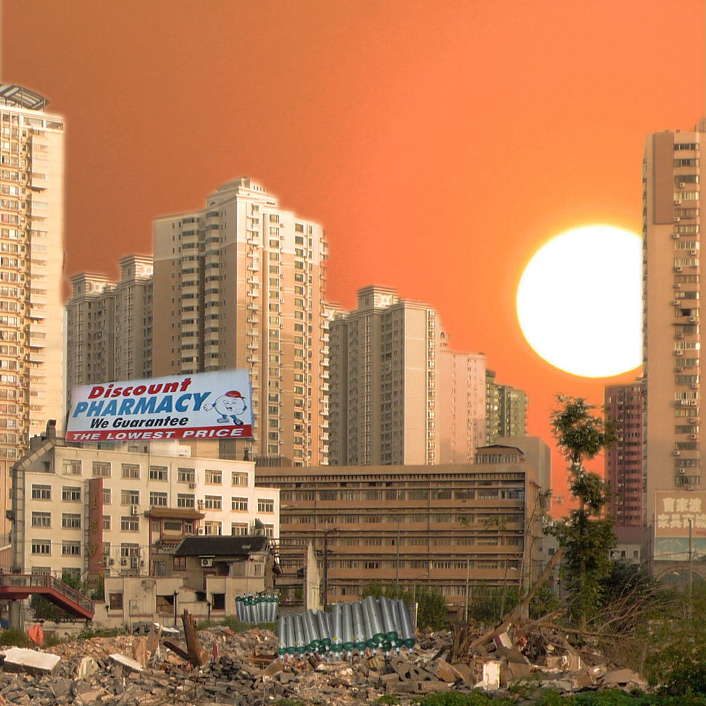

Saving lives one oxygen tank at a time. I float through the world that humans have destroyed but I am here to help them breath. Njord lives alone in a shelter they have created out of items people have placed in them or special objects they have found around. The world for the most part is overly bright and sunny. Too much exposure from the sun has cause the world to heat up and made rain fall very rare. When it does rain it, torrential rain falls, causing floods in the street. People in the city live underground or in man-made shelters wherever they can seclude and make themselves comfortable. Usually, people join and are a part of their own communities and neighborhoods. Humans exist, having to wear gear that filters air pollution. Animals have adapted to the conditions and have learned to help people. I comes from the city life. I have always grown up and been a part of the city bustling scene. From my experience there is nothing special about the city. I have always been here and have floated from place to place, never been held down.
